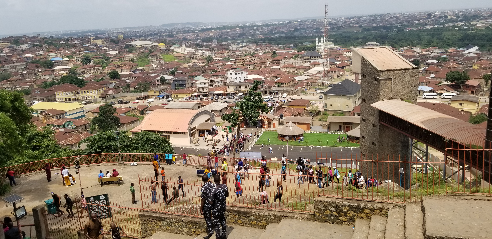

Waleola Lolade
Saturday, 23rd August, 2025.
Last weekend, I embarked on an exciting adventure to Olumo Rock, a popular tourist destination in Abeokuta, Nigeria.
As I climbed up the rock's many steps, I felt a mix of excitement and trepidation.
The stunning views of the city from the top were breathtaking, and I couldn't wait to explore the rock's rich history and culture.
Upon reaching the top, I was struck by the panoramic views of Abeokuta and the surrounding landscape. The rock's unique shape and structure were fascinating,
and I enjoyed learning about its significance in the city's history.
Our guide shared stories about the Egba warriors who used the rock as a refuge during times of war, and I was impressed by their bravery and resilience.
As I explored the rock, I noticed the various shrines and artifacts that dotted the landscape. Each one told a story about the rock's cultural and spiritual significance,
and I was fascinated by the intricate carvings and sculptures. Our guide was knowledgeable and passionate, and he shared many interesting stories and anecdotes about the rock's past.
I was particularly fascinated by the rock's role in the city's history and its importance as a cultural landmark.
As I descended from the rock, I felt grateful for the experience and the opportunity to learn about this incredible landmark.
My trip to Olumo Rock was an unforgettable adventure that left me with lasting memories and a deeper appreciation for Nigeria's rich cultural heritage.
Thanks to Legedary Tutors and the Exons academy for the opportunity to experience this great adventure.
Legendary
Tutors
Academy
Legendary is not just a name; it is a vision, a standard, and a movement dedicated to excellence. The word itself carries a sense of greatness, timelessness, and impact qualities that define what Legendary represents in every sphere of operation. At its core, Legendary is built on the belief that true success comes from knowledge, discipline, and the courage to rise above limitations.